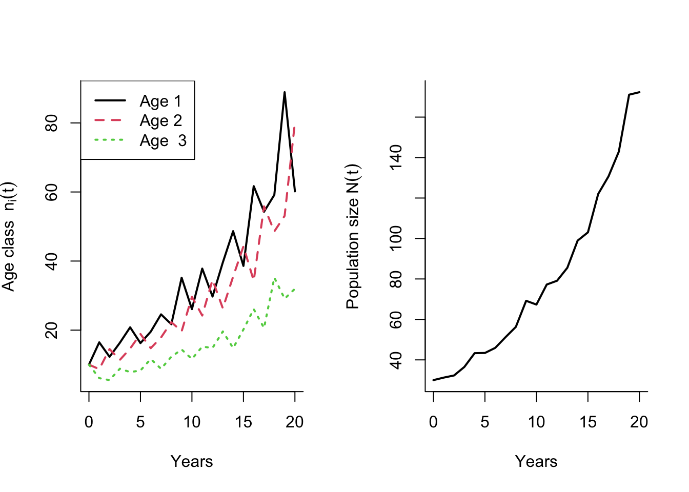

B Case study: Asian elephants
As an example we will look at an age structured model for Asian elephants (Elaphas maximus) with annual time steps (Goswami, Vasudev, and Oli 2014). This example was used by (Vindenes, Coeur, and Caswell 2020).
Elephants are long-lived and an annual time step age-structured model therefore necessarily requires many age classes. This model is post-reproductive so the first age class represents newborn elephants at age 0. To includes elephants up to age 60, we therefore need 61 age classes. We take advantage of R’s ability to handle repeated elements to define the vectors and matrices.
B.0.1 Define vital rates and matrices
Survival and fertility
Using numbers provided in the source paper, we first define vectors of annual fertility and survival.
#Fertility coefficients
Fvec <- c(rep(0,15),rep(.2243,5),rep(.2216,30), rep(.18,10),0 )
#Survival probabilities
Svec <- c(0.9, rep(0.96,4),rep(0.985,10),rep(0.997,5),rep(0.985,30),rep(0.9,10),0)
The function c() creates a vector, while the rep() function repeats the first argument by the number of times given in the second argument. For instance, rep(0.9,10) repeats 0.9 ten times. This way we don’t have to write every single number out of 61 entries.
By definition the model assumes that no elephants survive from age 60 to 61, which is an arbitrary decision (we could have included elephants up to age 50 or 70 instead). However, since there are probably few elephants at this age in the population, this assumption does not have a large effect on the demographic calculations.
To see the number of elements in a vector, we use the function length(). To extract only some numbers from a vector, we use square parentheses [] where we indicate the elements of the vector we want to extract. For instance:
#Length of the fertility vector
length(Fvec)## [1] 61#Get the first 10 elements of the survival vector
Svec[1:10]## [1] 0.900 0.960 0.960 0.960 0.960 0.985 0.985 0.985 0.985 0.985Plot the vital rates
To plot the vital rates with ggplot, we can make a data frame, turn it into long format. We use the function tibble() from tidyverse, which is an alternative to the more complex data.frame() function. A ‘tibble’ is a data frame object that don’t allow users to change variable names or types, and forces users to be more aware of variable types. You can read more about tibbles here.
Age <- 0:60
VitalRates <- tibble(Age, Svec, Fvec)
d <- melt(VitalRates, id.vars="Age") #Create long formate with one variable representing both vital rates
ggplot(d) +
geom_line(aes(x=Age,y=value ),col=1, lwd=1.2) + #Plot lines, Age on x axis and value of the variable on y axis
facet_wrap(~variable, scales="free")+ #To make two separate plots for Svec and Fvec (variable)
theme_bw() +
theme(legend.position = "top",legend.title = element_blank())+ #Put legend on top
labs( x="Age (year)", y="Value")+
guides(fill = guide_legend( nrow = 1, byrow = TRUE),color = guide_legend(nrow = 1, byrow = TRUE))
Now we can define the matrices \(\mathbf{F}\) and \(\mathbf{U}\) based on the vectors, and then the projection matrix \(\mathbf{A}\) based on \(\mathbf{F}\) and \(\mathbf{U}\):
F matrix (production and transition of offspring):
k <- 61 #Dimension of matrix (corresponding to age 0 to 60)
Fmat <- matrix(0, k, k) #Make a k x k matrix where all elements are zero
Fmat[1,] <- Fvec #Add the fertility coefficients on the first rowNote that we use Fmat[1,] to refer to the first row of the matrix, and then <- Fvec to assign the entire vector to this first row. If we wanted to refer to the second column we would use Fmat[,2]. In general, to get the number located in row i and column j, use Fmat[i, j].
U (survival and transitions):
In age structured models like this one, the only transitions are from one age class to the next (individuals cannot age more than 1 year per year), so the transition matrix only depends on the survival probabilities. These should go on the subdiagonal, so we use the condition row(Umat) == col(Umat) + 1 to make the entries (when the row number of the matrix equals the column number + 1). Another option could be to use a ‘for loop’ to go through each row and column and only add elements from the survival vector when the row number correspond to column number plus 1.
Umat <- matrix(0,k,k)
Umat[row(Umat) == col(Umat) + 1] <- Svec[1:(k-1)]A (projection matrix):
In age structured models we call this the Leslie matrix.
Amat <- Umat + FmatTo get the dimension (row number and column number) of a matrix, use the function dim().
dim(Amat)## [1] 61 61We can also name the rows and columns of \(\mathbf{A}\), although this is not necessary for the calculations. Lets say we want to use “Age0” to represent age 0, “Age1” to represent age 1 etc:
#Use the paste function to create a vector of elements A0 to A60, then assign this to the rownames and column names of A.
colnames(Amat) <- rownames(Amat) <- paste ("Age", 0:60, sep="")
#Look at the first 10 by 10 rows and columns:
Amat[1:10,1:10]## Age0 Age1 Age2 Age3 Age4 Age5 Age6 Age7 Age8 Age9
## Age0 0.0 0.00 0.00 0.00 0.00 0.000 0.000 0.000 0.000 0
## Age1 0.9 0.00 0.00 0.00 0.00 0.000 0.000 0.000 0.000 0
## Age2 0.0 0.96 0.00 0.00 0.00 0.000 0.000 0.000 0.000 0
## Age3 0.0 0.00 0.96 0.00 0.00 0.000 0.000 0.000 0.000 0
## Age4 0.0 0.00 0.00 0.96 0.00 0.000 0.000 0.000 0.000 0
## Age5 0.0 0.00 0.00 0.00 0.96 0.000 0.000 0.000 0.000 0
## Age6 0.0 0.00 0.00 0.00 0.00 0.985 0.000 0.000 0.000 0
## Age7 0.0 0.00 0.00 0.00 0.00 0.000 0.985 0.000 0.000 0
## Age8 0.0 0.00 0.00 0.00 0.00 0.000 0.000 0.985 0.000 0
## Age9 0.0 0.00 0.00 0.00 0.00 0.000 0.000 0.000 0.985 0Naming rows and columns can be useful to help us keep track of what they represent. Since indexing in R always start at 1 and not 0, it can be confusing to keep track of post reproductive models where the first element represents age 0 (but class 1).
B.0.2 Project population growth
These parameters are found using the function defined under Asymptotic parameters, with the mean projection matrix defined above.
The long-term (asymptotic) population growth rate for the elephant model
B.0.3 Matrix calculations
These results are found using the function defined under Asymptotic parameters, with the matrices defined above.
The long-term (asymptotic) population growth rate for the elephant model
B.0.4 Life expectancy
These parameters are found using the function defined under Life expectancy, with the survival and transition matrix defined above.
B.0.5 Mean lifetime reproduction
Expected lifetime reproduction at birth (net reproductive rate) for the elephant model is
B.0.6 Generation time
This parameter is found using the function defined under Generation time, with the matrices defined above.
The generation time (mean age of mothers) for the elephant model
B.0.7 Sensitivities and elasticities
These parameters are found using the function defined under Sensitivities and elasticities, with the Leslie matrix defined above.